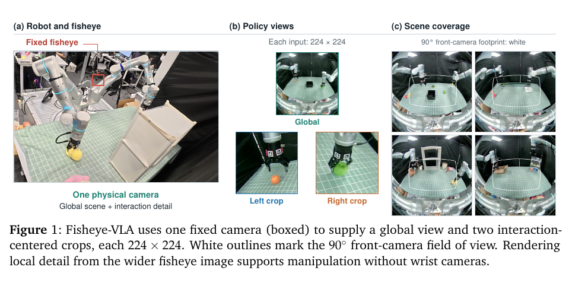
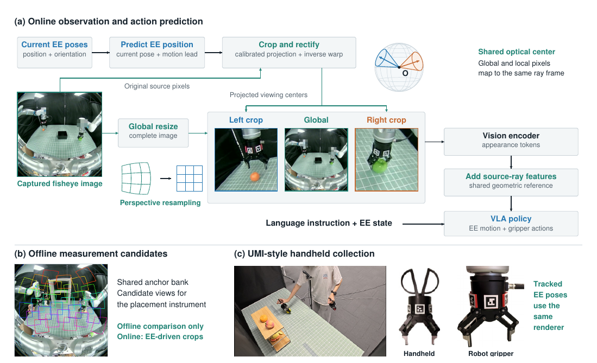
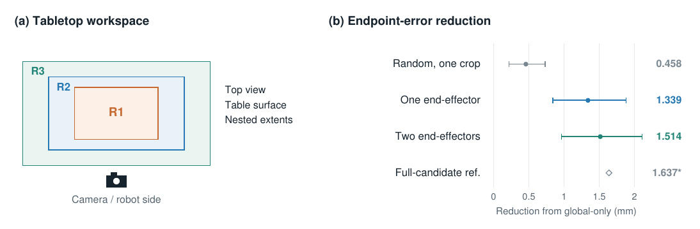
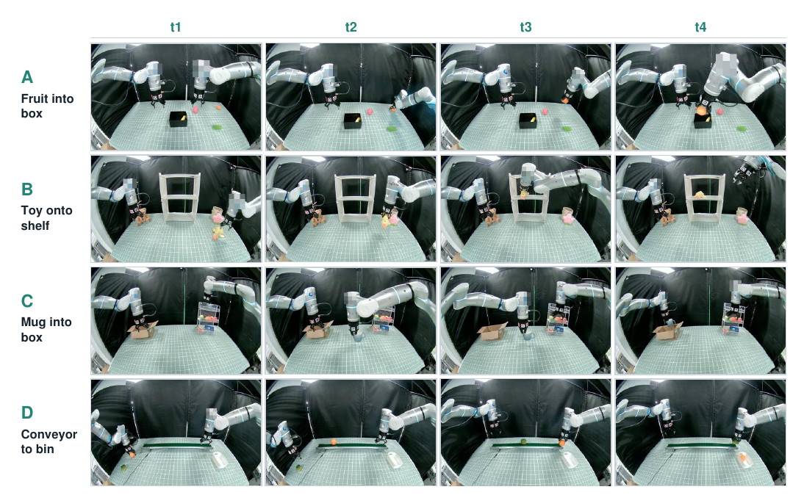

Persistent global view
The full fisheye image keeps targets, destinations, and scene context visible.
Single-camera · Bimanual manipulation · VLA
1The Chinese University of Hong Kong · 2DeepCybo · 3University of Washington
Project video
The complete 2:32 overview, optimized for fast playback on the web.
More demonstrations
Replace each numbered card with a task video when the clips are ready.
TL;DR
Fisheye-VLA replaces a front camera and physical wrist cameras with one fixed fisheye, rendering a persistent global view and two end-effector-centered perspective crops.

Abstract
Manipulation needs broad scene awareness and detailed local feedback, but conventional rigs obtain them from separate front and wrist cameras. Fisheye-VLA brings both into a single passive fisheye interface: the global stream preserves the workspace while local perspective crops direct detail toward the interaction.
A controlled re-rendering study shows that end-effector-centered views capture most of the estimated benefit of a much larger candidate pool. Calibrated projection and motion lead track the crops; shared ray encoding preserves their spatial meaning as they move.
Method
Current end-effector poses predict where visual detail will be needed. The renderer rectifies two local views directly from the source fisheye while keeping a resized global view.

The full fisheye image keeps targets, destinations, and scene context visible.
One perspective crop per hand spends visual detail where manipulation happens.
Global and moving local tokens retain their physical viewing directions.
Results
Across 50 trials per region, Fisheye-VLA reaches 84% and 82% success in the two expanded tabletop regions, where some targets extend beyond the ordinary front-camera footprint.
Regional mean: 79.3%


Citation
@article{ren2026fisheyevla,
title = {Fisheye-VLA: Decoupling Coverage and Acuity for Manipulation with a Single Fisheye Camera},
author = {Ren, Ziang and Yan, Zike and Zhang, Raymond and He, Xuguo and Li, Zhongyu},
journal = {arXiv preprint},
year = {2026}
}